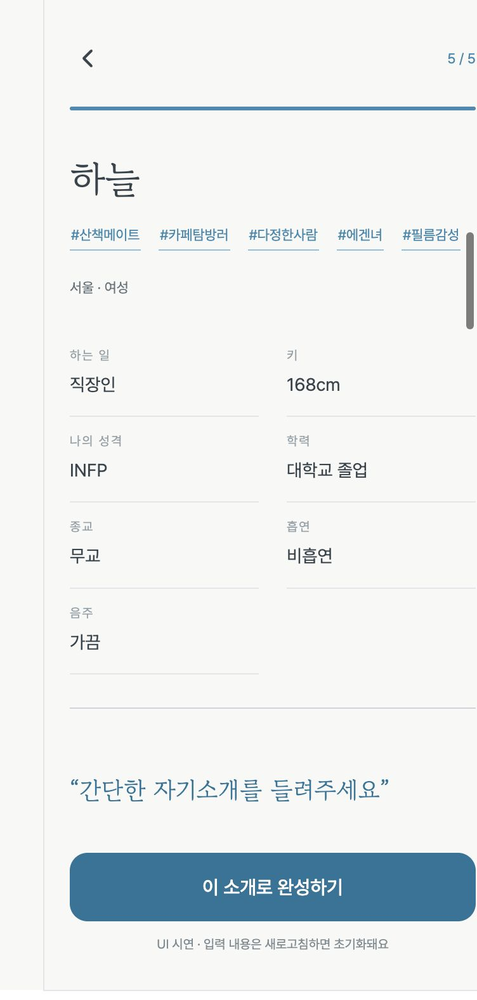

지금현재 화면

이름 → 해시태그 → 서울 · 여성 → 7칸 표 순서예요.
YAHWA · 가입 5/5 · 1차
사진은 그대로 두고, 사진 아래 이름부터 '나의 정보'까지를 네 가지 방향으로 다시 짰어요. 각 휴대폰 화면은 직접 스크롤해 볼 수 있어요. 마음에 드는 시안 하나를 골라 주시면, 그걸 바탕으로 2차 시안을 만들어요.

이름 → 해시태그 → 서울 · 여성 → 7칸 표 순서예요.
"깔끔하게 정리한 자기소개서 한 장"
원칙 P1 P2 P3 P5 P6 · 가장 익숙한 구조라 위험이 적어요.
"필름 한 롤에 담긴 나, 컨택트 시트처럼"
원칙 P2 P3 P6 P8 · 영감: 필름 컨택트 시트, 프레임 번호, 날짜 각인
"청춘영화가 끝나고 올라가는 크레딧"
원칙 P1 P3 P5 P6 · 깬 관습: 왼쪽 정렬 → 가운데 정렬. 값이 짧아 읽기에 무리가 없고, 영화 엔딩 같은 여운을 줘요. 대신 긴 값(예: 직업을 길게 적을 때)에 약해요.
"친구에게 건네는 자기소개 쪽지"
원칙 P4 P5 P8 · 비어 있는 항목이 있으면 문장을 자동으로 줄여야 해서 구현이 가장 까다로워요.
하나를 고르거나 "A의 구조 + D의 테이프"처럼 섞어 말씀해 주세요. 고른 방향으로 2차 시안을 2~3개 더 만들어요.